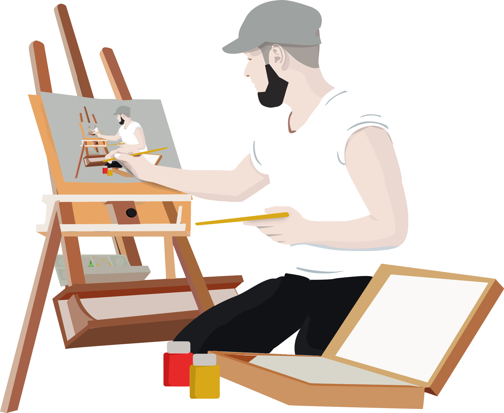

Welcome! I'm glad you are here.
Let's Start with a Self-Care Check-In
Everyday, ask yourself the following questions. If possible, write down your responses.
- How am I feeling right now?
- What physical sensations are present in my body now?
- Why do I feel this way?
- What is the state of my thinking?
- How do I handle stress?
- Am I honoring my boundaries?
- What makes me happiest?
- What am I grateful for?
- What are my intentions/goals for today?
- How can I help myself reach the goals I set for myself today?
These questions are here to assist you in returning to the present moment. When we return to the present, there is a powerful experience of self-awareness and self-recognition taking place. It is a gentle reminder that your are not alone. Have fun with these. You do not have to answer all of them at once. Feel free to add to the list.
Sometimes, we tend to get wrapped up in the past and the future that we forget what is happening now. No matter what direction your life may be going in, it is always good practice to check-in with yourself, the person who matters most in your life.
What to do now?
After you are done the check-in, take a moment to reflect on your answers. It would be a good practice to keep a daily record of these check-ins to reference later. If you find that you don't feel better, please navigate to the activities section of this site.